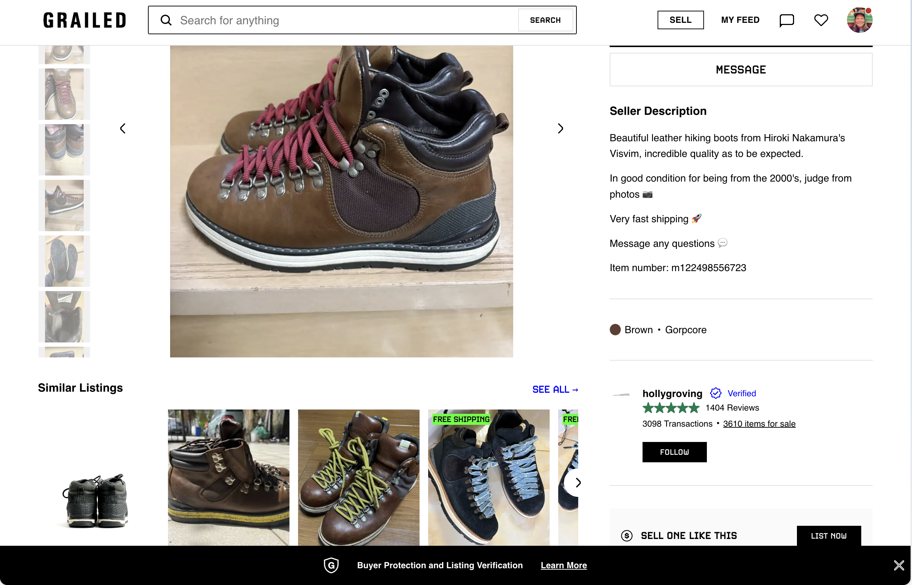
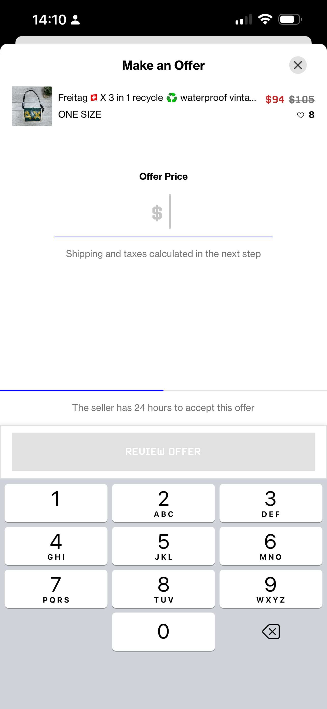

Redesigning the trust signals across listings and the path to purchase — closing the confidence gap upstream of checkout.
Grailed is a resale marketplace for menswear and streetwear — where trust in an unknown seller and an unverified item is the main thing standing between browsing and buying, more than checkout mechanics themselves.
Buyers browsing higher‑value or higher‑intent listings were hesitating and dropping off before completing a purchase. The friction wasn't in the checkout flow itself — it was upstream: buyers didn't have enough confidence in the item's authenticity, condition, or the seller's reliability to commit.
I partnered with the executive leadership team to set product vision and strategic direction, then led a team of 5 designers through a focused, few‑month initiative concentrated on the trust signals surfaced across listing pages and the path to purchase, rather than a broad redesign.
Beyond the feature work itself, I used this period to formalize how the design team operated — mentoring designers on craft and establishing a repeatable approach for tackling ambiguous, trust‑driven problems rather than solving each one from scratch.

